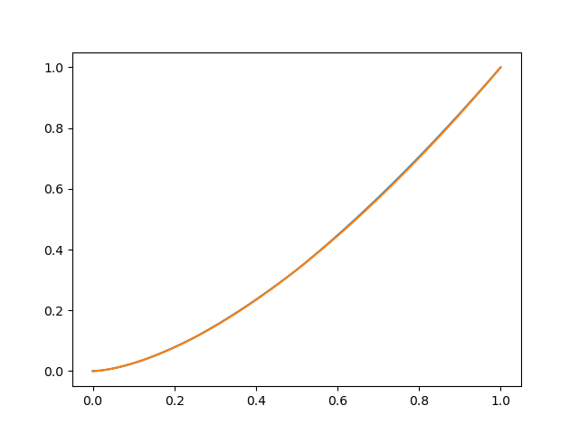
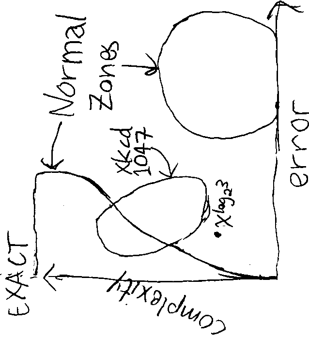
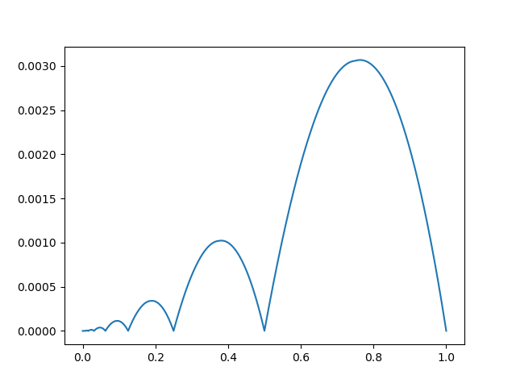
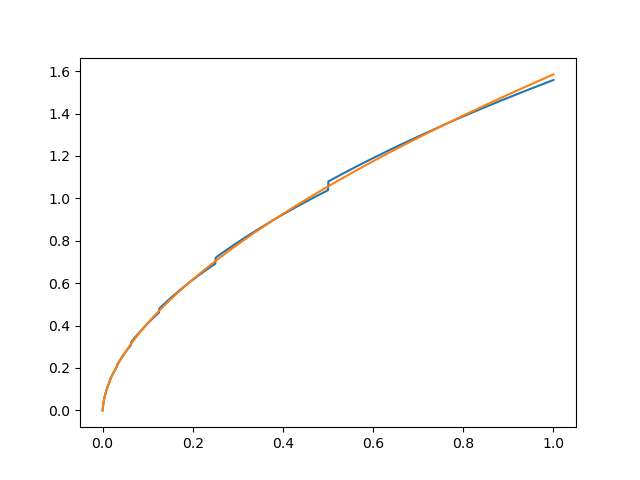
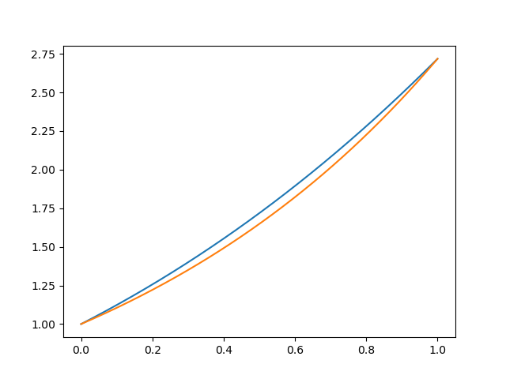
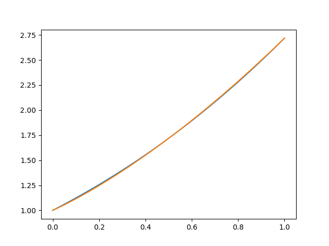
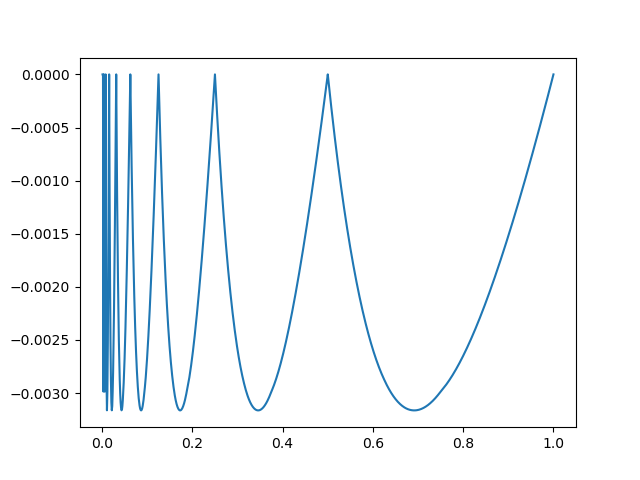

I write up this piece of maths now, for if I did not, I would remain obsessed for the next week and go mad.
I cloned Battelle's CantorDust program for a study on file compression. CantorDust and my clone classify each byte in their input into one of 65536 bins, then plot the sizes of those bins as a grid. This means CantorDust must pick a brightness, conventionally 0 to 255, to depict how many bytes fit into each bin. To the mathematician, that entails a monotonic function from arbitrary nonnegative integers to integers in the range 0 to 255. That still leaves many options.
The most naive such function is the linear n * 255 / (max - min).
If the most full bin has 1000 items, and most others are empty or have up to 10 items each, then that fullest bin shows as the brightest possible 255, and the rest of the image remains very dark.
That makes it hard to distinguish between the great majority of the bins.
Slightly cleverer is a logarithmic map, something like log(n || 1) * 255 / log(max / (min || 1)).
In the same 1000-against-10 example, the fullest bin is still the brightest possible, while the others would map to the range from 0 to 85.
For most cases, this is good enough.
Not always.
I went for a much cleverer method, contrary to Kernighan's classic advice.
Debugging is twice as hard as writing a program in the first place. So if you're as clever as you can be when you write it, how will you ever debug it?
In this case, I did debug my pgmdust.c just fine.
But I remain thoroughly confused about the theory beyond it.
Another brightness map would take the mean size of all bins, then assign 255 (white) to bins larger than that mean size, and 0 (black) to bins smaller than that mean size. In the example, the mean size of a bin would be somewhere from 1 to 10. The outlier at 1000 would show as white, and so would some fair subset of the rest. All the 0-bins and some of the smaller ones would show as black.
This dichotomy, literally black and white, is of course not nuanced enough. But we can apply it recursively. Among those bins that got assigned 0, take the mean and split again, to assign brightnesses 0 and 64 (dark grey). Likewise, among those bins that got assigned 255, take the mean and split again, to assign brightnesses 128 (medium grey) and 192 (light grey). Do it again for six more rounds. Then each pixel in the output image will fit one of 256 bins of bin-size, monotonic to colours.
Inversely, we have a monotonic function from integers in the range 0 to 255 to intervals of reals, based on a discrete distribution of integers. To compute that function, look at the input in binary, starting from the most significant bit. At the start, the output is the entire range of the original distribution. On a 0, reduce the output's upper bound to the mean of values in the distribution that fit the previous output range. On a 1, reduce the output's lower bound to the same mean.
We may call this pattern a "dyadic recursive mean-range transform", a name that ChatGPT picked, for it's too novel for me to match to something already named.
My best tools of analysis work on continuous functions. Let's reframe that function and take a limit.
The function we're studying takes its input as a bit-string. It might as well get that bit-string as the binary expansion of a real number from 0 to 1, like the 0.01011110... of 1/e. A real number's binary expansion goes forever, so to each input we get an infinite sequence of shrinking intervals. From one interval in that sequence, take the mean of the distribution restricted to that interval, then cut the interval with that mean to get the next interval. Which side to cut on follows from a bit consumed from the input number. On well-behaved distributions, that sequence will converge around a single output number.
What exactly is a "distribution" here? For the convenience of symmetry, let's use an input function mapping the interval 0 to 1 to arbitrary real numbers. The CDF is then the proportion of the input function's input that yields output less than the input to the CDF. The PDF is the derivative of that.
For a monotonically increasing input function, its mean restricted to an interval of values is its integral from the input that yields one endpoint to that of the other endpoint, divided by their difference. That is, the mean of f(x) restricted to values from a to b is (∫f-1(a)f-1(b) dx f(x)) / (f-1(b) - f-1(a)).
Consider the input function f(x) = k, a constant. When stepping thru bits of the transformed function's input, we start from the interval from minimum to maximum, which here is just the point k. No later cuts can change that, so the transformed function is also a constant, F(x) = k.
Consider the affine input function f(x) = m x + b. WLOG, suppose m > 0 so that f increases monotonically. The starting interval ranges from the minimum f(0) = b to the maximum f(1) = m + b. The mean of f over that interval is the midpoint m / 2 + b. Inputs less than 1/2 to F start with a 0 in binary, so they proceed on the interval from 0 to m / 2 + b. Likewise, inputs at least 1/2 start with 1, so they proceed on the interval from m / 2 + b to m + b. By thorough symmetry, we end up with F(x) = m x + b = f(x).
Consider a function scaled from another as f(x) = k g(x). WLOG, suppose k > 0. Its starting interval ranges from the minimum, k times the minimum of g, to the maximum, k times the maximum of g. The mean of f restricted to the output interval a to b is k times the mean of g restricted to the scaled output interval a / k to b / k. By thorough symmetry, we end up with F(x) = k G(x), scaled from the transformed g.
I suspect that this transform commutes with addition, such that h(x) = f(x) + g(x) transforms to H(x) = F(x) + G(x). If so, the transform would be linear, a convenient property. But it's not obvious to me how to prove that.
Consider the input function f(x) = x2. Its starting interval ranges 0 to 1. The mean across that initial range is F(1/2) = 1/3. Unlike first-degree polynomials, the transform actually effects some change here, for F(1/2) ≠ 1/4 = f(1/2). But what change exactly?
Since f increases monotonically, the lemma above applies so that F((a + b) / 2) = (∫uv dx f(x)) / (v - u), where a and b are of the form p / 2k and (p + 1) / 2k respectively, and u = f-1(F(a)), v = f-1(F(b)). Plug in the particulars of f to get F((a + b) / 2) = (F(b)3/2 - F(a)3/2) / (3 (F(b)1/2 - F(a)1/2)).
That doesn't make for an obvious closed form, but we can compute it with a program.

I plotted F(x) in blue, and a simple closed-form approximation in orange over it. You'll hardly see any of the former there, because the approximation is very close.
What is that approximation? This F monotonically increases from (0, 0) to (1, 1). If a function does that, we may guess it's a power function. From that ansatz xp, fit it to the example F(1/2) = 1/3. We find 2-p = 1/3, so p = log2(3), i.e. F(x) ~ xlog2(3).
I find it strange for something so simple to fit so closely yet not exactly.

The residuals are nondifferentiable and all positive, except at reciprocal powers of two, where the approximation nails it.

It looks to me something like k xlog2(3) |sin((τ/2) log2(x))|, but I didn't find such a correction to work.
To see the issue more clearly, calculate the derivative. It's discontinuous, in blue, at every reciprocal power of two.

With f(x) = xk, we get F(1/2) = ∫01 dx xk = 1 / (k + 1). Assume a power function for F, as with the quadratic, and get the general approximation xlog2(k + 1). In each case, there remain small residuals of a similar shape.
The exponential f(x) = ex becomes something that curves a tad above ex, yet shares its endpoints.

Split ex along its power series, transform from there by linearity, and you get the strange but much closer function sum(x ** math.log2(i + 1) / math.factorial(i) for i in range(10)).

The logarithm f(x) = ln(x) becomes very close to F(x) = log2(x), with nondifferentiable residuals as above.
